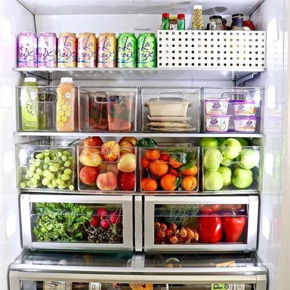
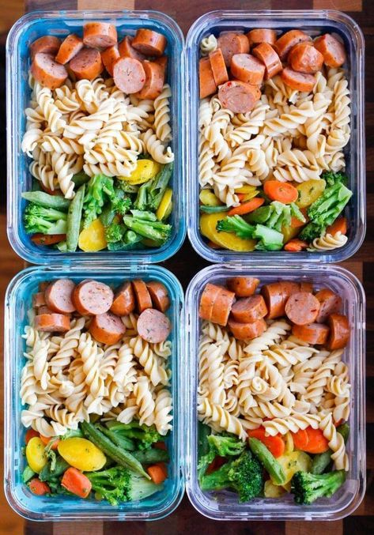
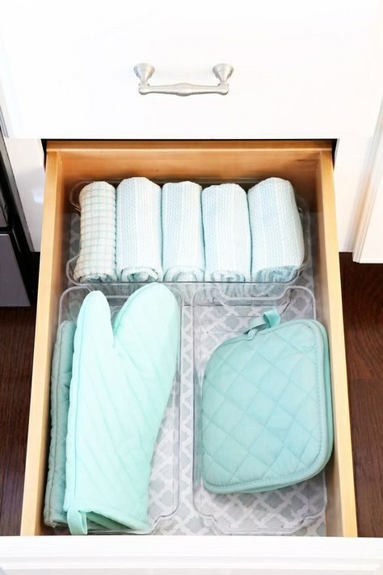

Organización

-
Comprar cajones de organizacion para la nevera, asi es mas facil
de limpiar y de encontrar los alimentos
-
Tener basura organica y basura de reciclaje,en la de reciclaje
limpiar todos los frascos antes de botarlos
- Barraer y trapear diario la cocina
- Organizar un horario semanal con las comidas
Meal prep

-
Tener las harinas ya cocinadas para la semana: arroz, papa, pasta
- tener las verduras ya lavadas y cocinadas
- condimentar la carne, pollo y pescado antes de congelar
-
tener guisos, vinagretas, y salsas como la napolitana ya
preparadas
Limpieza

-
Cubrir de aluminio tu estufa al cocinar fritos o alimentos que
salpiquen mucho
-
utilizar rollos de liner para cubrir los cajones de la cocina, se
pueden conseguir en amazon. Tambien se conocen como tapetes
antideslizantes.
- Hacer una limpieza general de la nevera cada 15 dias
-
El bicarbonato sirve para despercudir trapos y para brillar la
cocina
Decoración

-
Busca inspiraion sobre el estilo que mas te gusta, puede ser un
estilo mas clasico o uno rustico
-
Dependiendo del estilo utilizar la vajilla adecuada y los centros
de mesa
-
Asegurase que el lugar tenga muy buena iluminación, puedes
utilizar velas para mejorar la iluminacion y de paso decorar
-
Las servilletas de tela en n tono neutro siempre daran elegancia a
la mesa